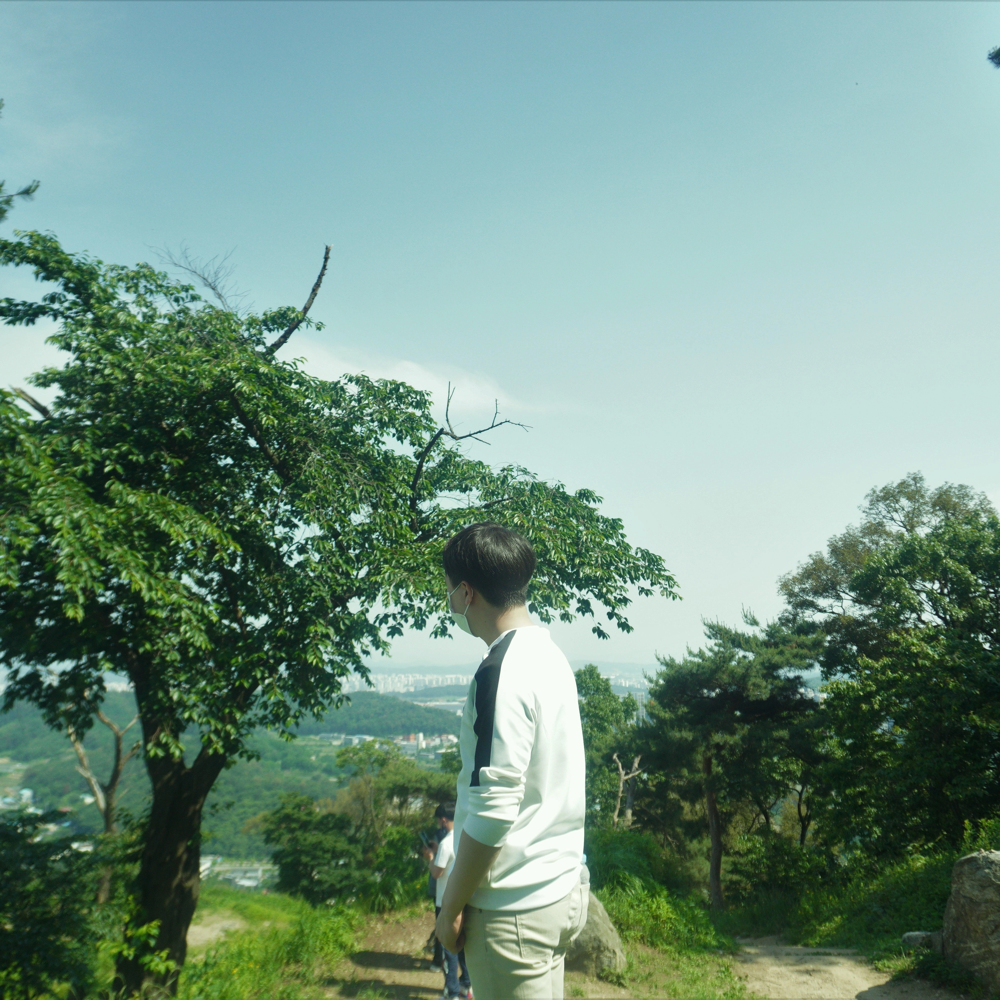
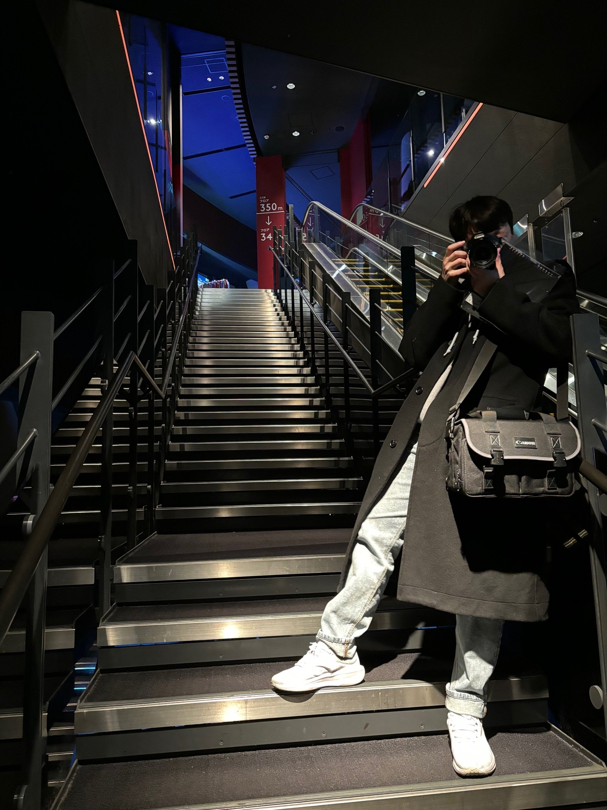

about
조창훈
ggongco1120@gmail.com
010-2158-5184


나이: 31세(95년생)
학력: 한신대학교 컴퓨터공학부 졸업(학사)
졸업설계:
캘린더와 통계정보를 활용한 교수와 학생 사이의 양방향 일정 조율 웹 애플리케이션
- 경력
- 1. (주) 한국교육평가원
- 직무: 웹퍼블리셔
- 직책: 주임
- 주요 업무: Classic ASP, MS-SQL 등을 활용한 페이지 유지보수 및 반응형 페이지 신규 개발
- 근속기간: 2022-10 ~ 2024-12
- 1. (주) 한국교육평가원
- 훈련사항
- 1. [디지털디자인]반응형/웹퍼블리셔/프론트엔드 웹개발자 과정
- 기간: 2021.12 - 2022.5
- 기관: 더휴먼 컴퓨터아트 아카데미
- 기초적인 반응형 개발 및 크로스브라우징, 프론트엔드 기초 이해 - 2. 프로젝트기반 웹&앱(자바, 스프링, 리액트 노코드) SW개발자 양성과정
- 기간: 2025.04 - 2025.11
- 기관: 성남 그린컴퓨터 아카데미
- 팀 단위의 프로젝트 내에서 협업하는 방법에 대해 학습
- 1. [디지털디자인]반응형/웹퍼블리셔/프론트엔드 웹개발자 과정
- 수상 & 자격
- 1. 자격증
- - 웹디자인 개발기능사(22년 04월 취득)
- 2. 수상
- 제 26회 대한민국학생발명전시회 한국무역협회장상 동상
- 출품명: 대류 원리 시험기구
- 시상연도: 2013년 7월(당시 고3)
- 1. 자격증
Major Skills

PORTFOLIO
CONTACT
-
저의 키워드는 성실함과 창의성, 온유함 이라고 생각합니다.
당연하게 생각하는것도 한번 더 다시 생각해보고 다른시야로 보는 것을 즐겨하기 때문입니다.
더불어서, 협업의 환경속에서 온유함을 잃지 않고 신중히, 차분하게 문제를 해결해 나가고 싶습니다.
이러한 장점들을 살려서 여러 환경에서 좋은 영향력을 끼치고싶습니다.
Email: ggongco1120@gmail.com
Phone: 010-2158-5184
포트폴리오(현재 페이지)
사용툴: vscode, photoshop, figma
사용된 언어: html, scss, js, jQuery
1400, 1024, 720사이즈에 맞춰 제작했습니다.
작업과정 보기